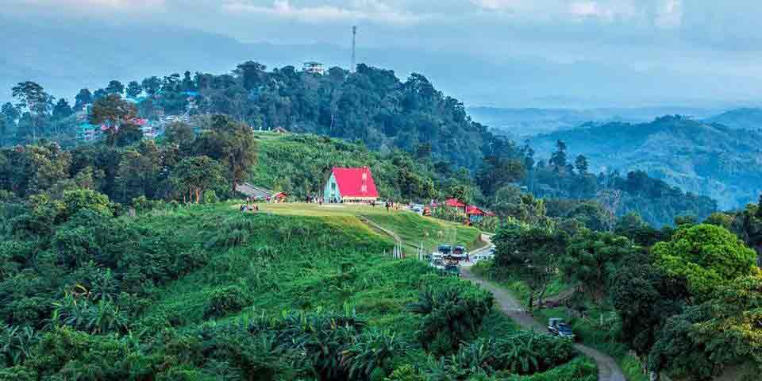

Sajek Valley - সাজেক ভ্যালি / মেঘের উপত্যকায় জীবন is an emerging tourist spot in Bangladesh situated among the hills of the Kasalong range of mountains in Sajek union, Baghaichhari Upazila in Rangamati District.[1] The valley is 1,476 feet (450 m) above sea level.[2] Sajek valley is known as the Queen of Hills & Roof of Rangamati. The name of Sajek Valley came from the Sajek River that originates from Karnafuli river. The Sajek river works as a border between Bangladesh and India.[3] Sajek is a union located in the north of Chittagong Hill Tracts. It's under Baghaichori Upazila in Rangamati hill district, it is situated 67km north-east from Khagrachhari town and 95km North-West from Rangamati city. The border of Bangladesh and Mizoram of India is 8 kilometres (5.0 mi) east from Sajek.[1] Sajek valley is known for its natural environment and is surrounded by mountains, dense forest, and grassland hill tracks. Many small rivers flow through the mountains among which the Kachalong and the Machalong are notable. On the way to Sajek valley, one has to cross the Mayni range and the Mayni river. The road to Sajek has high peaks and falls.[1] The native people of Sajek valley are ethnic minorities. Among them Chakma, Marma, Tripura, Pankua, Kaibarta, Lushai, other indigenous Assamese communities, and Sagma are mentionable. Women seem to be more involved in economic activities here.[citation needed] Tea stalls, food joints and roadside marketplaces are dominated by womenPicking fruits and vegetables early in the morning is a common trade here.They are not fluent in Bengali but the young population speak some English.[3]
